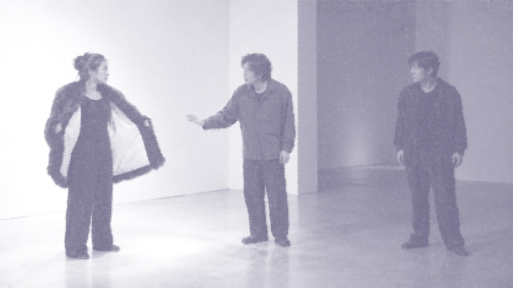
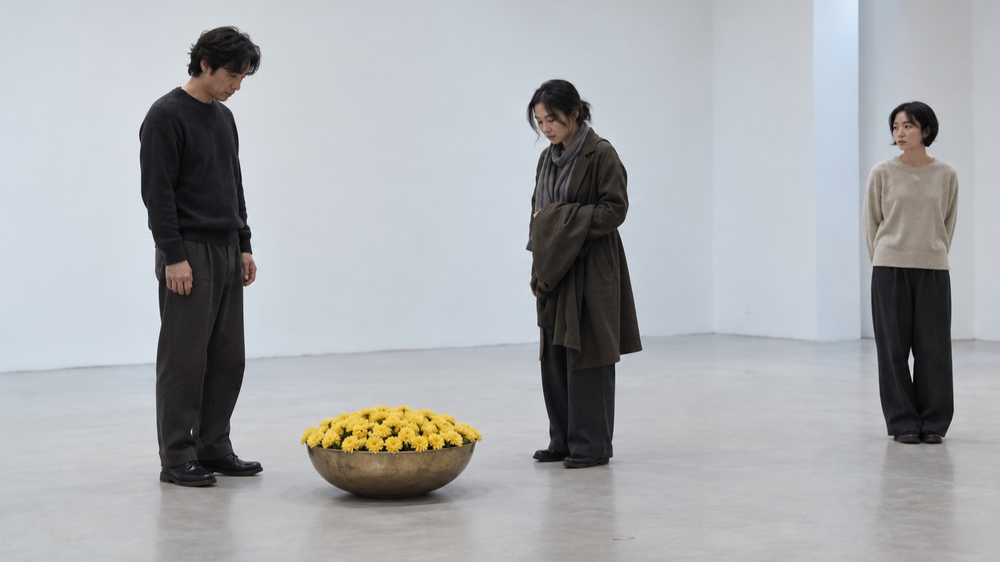
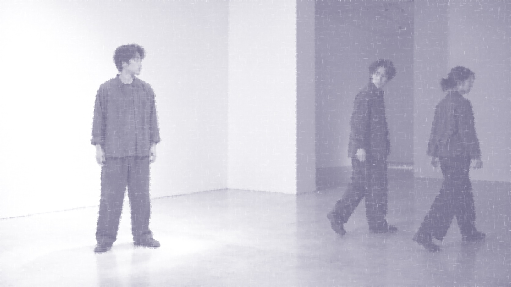
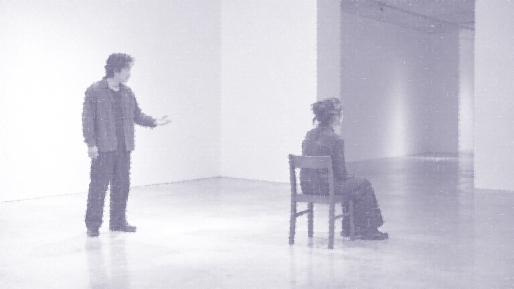
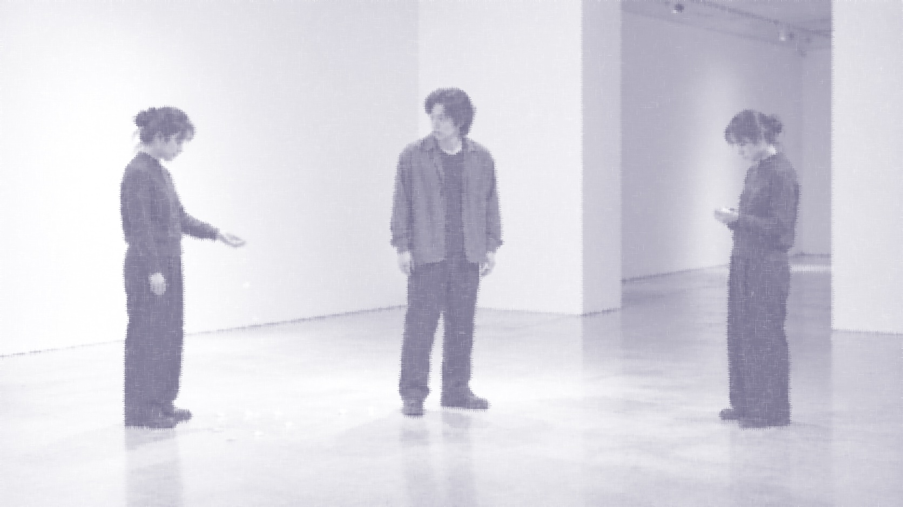
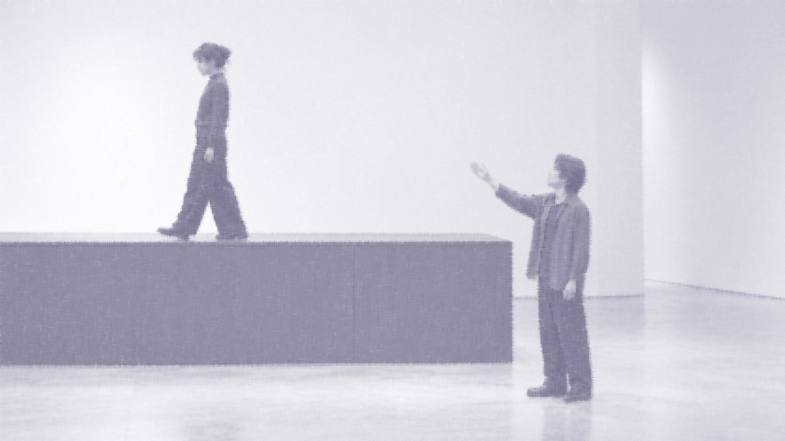
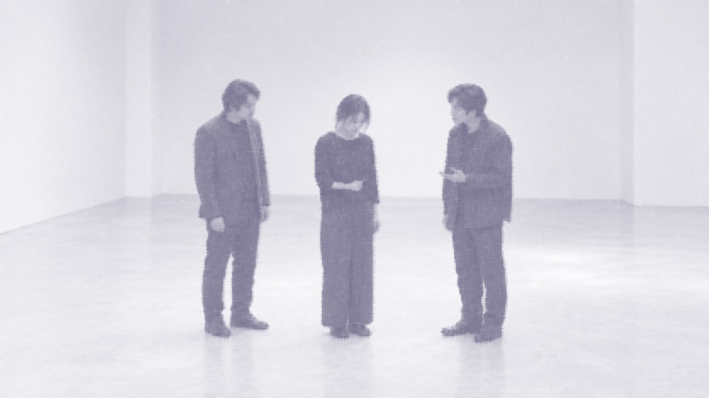

Dear Nature.
06scenes
《Dear Nature》는 자연을 향해 말을 건네는 시조를 모아, 그 안의 관계를 짧은 극으로 각색한 아카이브입니다. 시조마다 달라지는 말의 태도에 주목하고, 자연 청자를 ‘物’이라는 배역으로 옮겨 대사와 행동으로 재해석했습니다.
이곳에서는 각 작품의 원문과 정보, 편집 전 대본을 함께 읽을 수 있습니다.
제1막
장면 가마귀 검다 하고
작품 원문
가마귀 검다 하고 백로야 웃지 마라 겉이 검은들 속조차 검을소냐 아마도 겉 희고 속 검은 것은 너뿐인가 하노라
현대어 풀이
까마귀의 겉빛이 검다고 백로야 비웃지 마라. 겉이 검다고 속까지 검겠느냐. 오히려 겉은 희면서 속이 검은 것은 너뿐인가 한다.

대본
장면 풍상이 섞어 친 날에
작품 원문
풍상이 섞어 친 날에 갓 피온 황국화를 금분에 가득 담아 옥당에 보내오니 도리야 꽃인 양 마라 님의 뜻을 알괘라
현대어 풀이
바람과 서리가 뒤섞여 몰아치는 날 막 피어난 황국화를 금분에 가득 담아 옥당에 보내시니, 복숭아꽃과 오얏꽃아 꽃인 체하지 마라. 임금의 뜻을 알겠구나.

대본
제2막
장면 청산은 어찌하여 만고에 푸르르며
작품 원문
청산은 어찌하여 만고에 푸르르며 유수는 어찌하여 주야에 그치지 아니하는고 우리도 그치지 마라 만고상청하리라
현대어 풀이
푸른 산은 어찌하여 오랜 세월 늘 푸르며, 흐르는 물은 어찌하여 밤낮으로 멈추지 않는가. 우리도 멈추지 말고 언제나 푸르게 살아가리라.

대본
제3막
장면 청산리 벽계수야
작품 원문
청산리 벽계수야 수이 감을 자랑 마라 일도창해하면 다시 오기 어려워라 명월이 만공산하니 쉬어 간들 어떠리
현대어 풀이
청산 속 푸른 시냇물아, 빨리 흘러간다고 자랑하지 마라. 한 번 넓은 바다에 이르면 다시 돌아오기 어렵다. 밝은 달이 산에 가득하니 잠시 쉬어 가는 것이 어떠하겠느냐.

대본
제4막
장면 꽃이 진다 하고
작품 원문
꽃이 진다 하고 새들아 슬퍼 마라 바람에 흩날리니 꽃의 탓 아니로다 가노라 희짓는 봄을 새와 무삼하리오
현대어 풀이
꽃이 진다고 새들아 슬퍼하지 마라. 바람에 흩날리는 것이니 꽃의 탓이 아니다. 떠나가며 횡포를 부리는 봄을 시기한들 무엇하겠는가.

대본
제5막
장면 철령 높은 봉에 쉬어 넘는 저 구름아
작품 원문
철령 높은 봉에 쉬어 넘는 저 구름아 고신 원루를 비 삼아 띄우다가 임 계신 구중 심처에 뿌려본들 어떠하리
현대어 풀이
철령의 높은 봉우리를 쉬어 넘는 구름아, 외로운 신하의 원통한 눈물을 비로 만들어 띄워다가 임금이 계신 깊은 궁궐에 뿌려보는 것이 어떻겠느냐.

대본
제6막
장면 매화야 옛 등걸에
작품 원문
매화야 옛 등걸에 봄철이 돌아온다 옛 피었던 가지마다 피염직도 하다마는 춘설이 하 분분하니 필지 말지 하노매라
현대어 풀이
매화야, 해묵은 등걸에도 봄철이 돌아온다. 예전에 꽃피던 가지마다 다시 필 만도 하지만, 봄눈이 어지럽게 내리니 필지 말지 망설이는 듯하구나.
